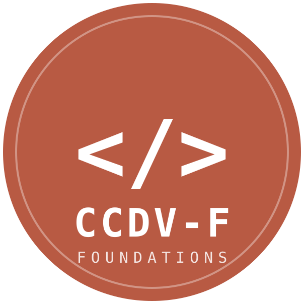

Consulta la teoria
Guida d’esame, otto domini e materiali di riferimento in un lettore Markdown.
Apri i materiali
Un unico punto di accesso per la teoria e la prova pratica di Claude Certified Developer – Foundations.
Guida d’esame, otto domini e materiali di riferimento in un lettore Markdown.
Apri i materialiAllenati senza tempo con domande pescate da tutti i test, con correzione e spiegazione immediate.
Metti alla prova la preparazione con quesiti a scelta multipla e revisione delle risposte.